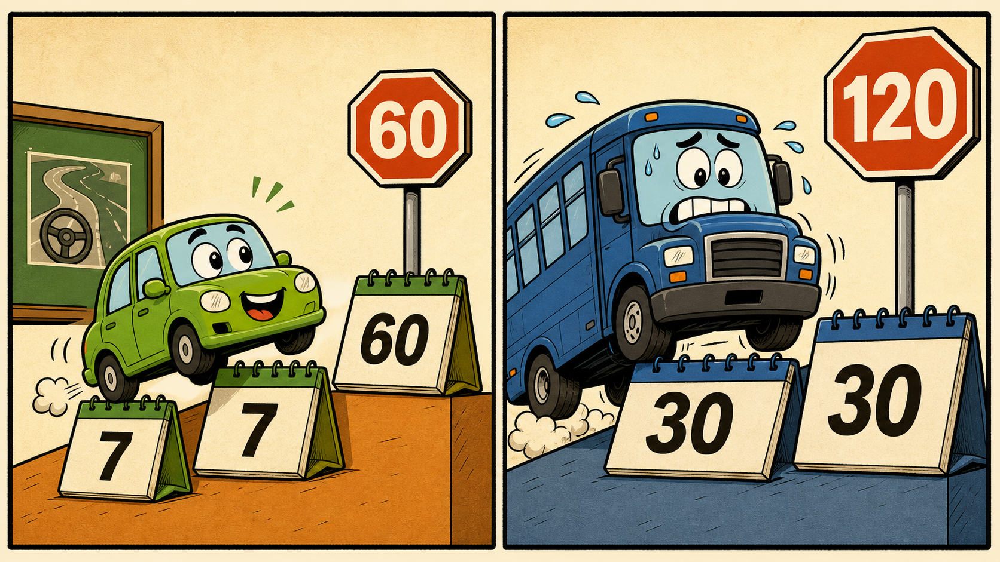

不是背题干，是看懂数字
把科目一，
压成 7 张表。
先学规则 → 只练错题 → 对比相似数字。题目换个说法，你也能判断。
依据公安部令第163号、第172号等现行公开法规整理 · 2026-07 核验
今日最难数字01 / 07
小型汽车 · 满分学习
7天起步
＋7每次递增
→60天封顶
记忆画面一周一格往上叠，叠到两个月就停。
⚠ 易混 大中型重点车型：30 → ＋30 → 120

0已掌握规则
—练习正确率
0待消灭错题
90分合格线
ROUND 01 · 建立规则地图
7 张数字总表
点击专题，再点卡片标记“已掌握”。
每条都只回答五件事：谁、情况、数字、例外、易混。
ROUND 02 · 专治张冠李戴
相似数字，对着记
大脑不怕数字多，怕数字没有关系。
左右一对照，差异就成了线索。
ROUND 03 · 只练薄弱处
数字拆弹局
答错不只告诉你答案，还要指出你混淆了哪个数字。
最稳的四轮复习法
别再从第 1 题刷到第 2000 题
1按专题学只记规则
2只做错题写清错在哪个数字
3相似对比专练数字边界
4考前压缩只看总表与错题